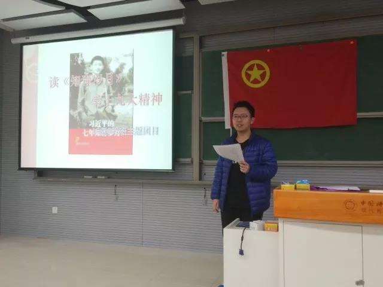
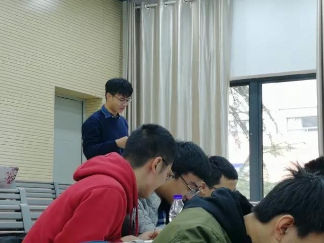
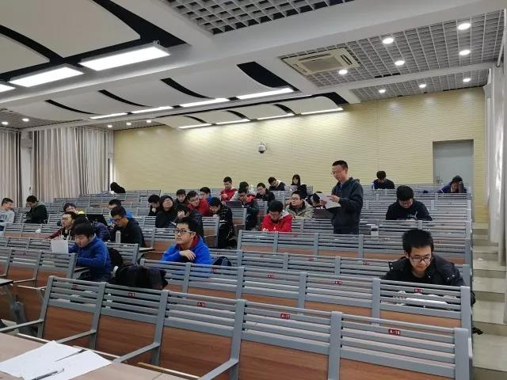

发布时间:2018-1-16 图文:002班团支书 甘傲然 排版:网络媒体部 XHXZ
16级理科试验班2班开展读《知青岁月》学习活动
2017年11月18日，002班召开了本学期第一次团学主题班会，本次班会的主题是“读《知青岁月》，学十九大精神”。
part 1

主持同学
本次活动由002班团支书甘傲然同学主持。首先，甘傲然同学给我们讲述了《知青岁月》这本书的年代背景，知青是指在上个世纪六十年代末，由于“文革”的影响，响应毛主席的号召从城市到农村参加农村生产建设的一批青年。习近平总书记当年也是一名“知青”，1969年，习近平总书记从北京坐上了“知青专列”往赴陕西延川县，开始了上山下乡的艰苦历程。
part 2

首先我们学习了材料中关于习近平总书记抵达延川路上的所见所闻，他们当时的时代条件十分艰苦，在延川县梁家河村这样的穷苦村庄，饮食生活条件都十分困难，习近平总书记就是在这样的条件下开始了七年的知青岁月。在那个年代，知青是广大青年的唯一出路，现在我们的生活条件极大的改善了，我们有各种各样的梦想，但是我们艰苦奋斗的优良作风不能丢。

之后，我们学习了习近平总书记到达延川县以后的经历。一开始，知青们面临着初到农村的第一道坎——“四关”：跳蚤关、饮食关、劳动关、思想关，经过几个月的适应和改变，习总书记将这些困难都一一克服。到后来，习近平总书记为梁家河村的乡亲们做了许许多多的实事，他的事迹至今仍然在当地流传。他当上梁家河生产支队的书记和村支书后，办事认真、处事公平、人缘极好，赢得了当地乡亲们的一致好评。我们看到，在当时艰苦的条件下，习近平总书记仍然不忘发扬艰苦奋斗的优良作风，刻苦劳动，尽自己所能服务村民。

班会上朗读材料的同学
最后我们观看了习近平总书记在十九大上作的报告（片段），我们深切的感受到我们伟大祖国这些年来发生的变化。一方面，我国的社会主义建设取得了卓越的成就，经济腾飞、国力提升、科技发展、文化复兴，东方的雄狮正在醒来，中国已经成为维护世界和平和促进世界稳定发展不可忽视的一部分；另一方面，我们的社会建设还存在不足，民生领域困难重重、贫富差距仍然较大、环境问题不容乐观、意识形态斗争复杂，等等。新时代的中国更需要我们新一代的青年不懈奋斗。

观看习近平总书记在十九大上的报告
part 3
学习完习近平总书记的七年知青岁月，我们感触颇深，在当时如此悲观的时代背景和如此艰苦的条件下，习近平总书记仍能保持奋斗向上的心态，尽自己所能服务人民，发扬艰苦奋斗的作风。十九大的报告，让我们体会到我们党、我们国家的伟大奋斗历程，也感受到习总书记对“两个一百年”的信心。在今天，我们的生活条件大大改善，我们的时代也给了我们可以描绘的未来，我们更应当努力学习，发扬艰苦奋斗的优良作风，学成文武艺，报效祖国和人民，报效中华民族。
班会告一段落，大家都觉得从这次班会中收获到了很多很多，班会也在轻松的气氛中落幕。